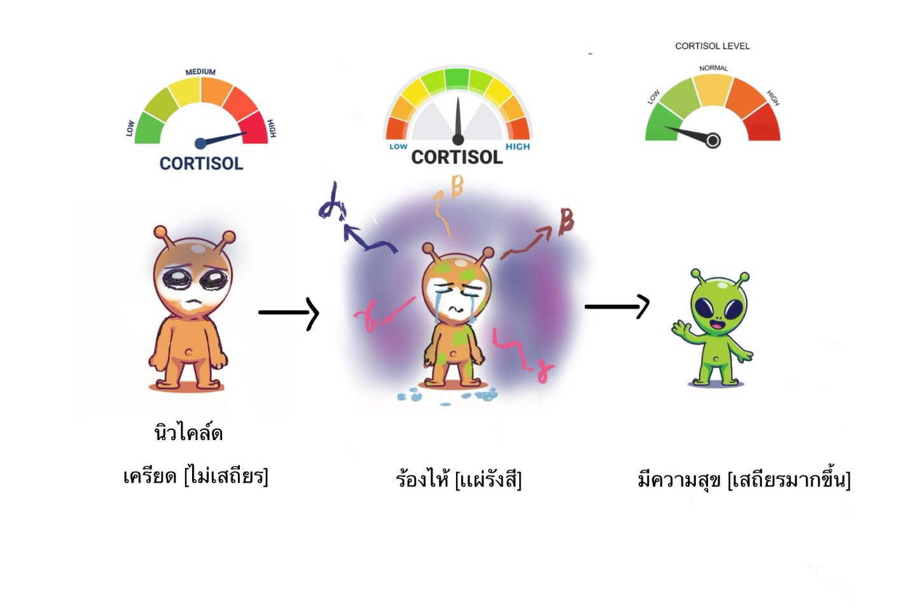
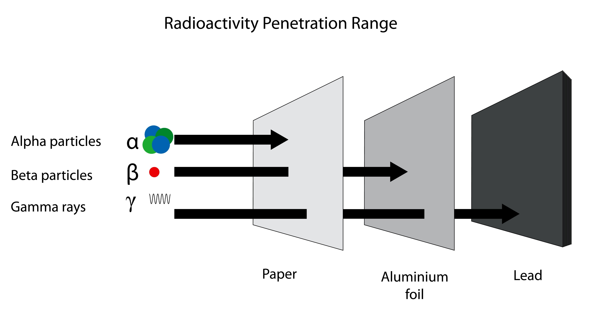

พื้นฐานนิวเคลียร์ที่ควรทราบ
คำว่า"นิวเคลียร์"มักถูกเชื่อมโยงกับอาวุธหรือภัยอันตรายอย่างไรก็ตามในทางวิทยาศาสตร์นิวเคลียร์มีความหมายกว้างกว่านั้นมาก
พลังงานนิวเคลียร์คืออะไร?
พลังงานนิวเคลียร์คือพลังงานที่เกิดจากการเปลี่ยนแปลงภายในนิวเคลียสของอะตอม อะตอมหนึ่งประกอบด้วยนิวเคลียสซึ่งมีโปรตอน (proton) และนิวตรอน (neutron) รวมตัวกันอยู่ตรงศูนย์กลาง และมีอิเล็กตรอน (electron) เคลื่อนที่อยู่รอบนอก
เปรียบเทียบ: หากอะตอมมีขนาดเท่าสนามฟุตบอล นิวเคลียสจะมีขนาดเพียงเท่าลูกแก้วเท่านั้น แต่มีมวลเกือบทั้งหมดของอะตอมรวมอยู่ภายใน!
คลิกอะตอมเพื่อกระตุ้นนิวเคลียส
การสลายตัวของนิวเคลียส
นิวเคลียสที่ไม่เสถียรจะสะสมพลังงานส่วนเกินจนถึงจุดวิกฤต แล้วปลดปล่อยออกมาเป็นรังสีผ่านกระบวนการสลายตัว (Radioactive Decay)
ลองเอง: คลิกนิวเคลียสเพื่อเพิ่มพลังงาน เมื่อพลังงานสูงเกินจุดวิกฤต นิวเคลียสจะสลายตัวอัตโนมัติ!
คลิกนิวเคลียสเพื่อเพิ่มพลังงาน
คลิกเพื่อเพิ่มพลังงาน (+10)
เออร์เนสต์ รัทเทอร์ฟอร์ด
"บิดาแห่งฟิสิกส์นิวเคลียร์" นักฟิสิกส์ชาวนิวซีแลนด์ผู้ได้รับรางวัลโนเบลสาขาเคมีปี 1908
การค้นพบนิวเคลียส (1911)
ทดลองเปลือยทองคำ (Gold Foil Experiment) พบว่ามวลของอะตอมอยู่รวมกันที่ศูนย์กลาง
การทดลองกัมมันตภาพรังสี
ค้นพบรังสีอัลฟา บีตา และแกมมา วางรากฐานฟิสิกส์นิวเคลียร์
ผลงานสำคัญอื่น
ค้นพบธาตุเรเดียม และพัฒนาทฤษฎีการสลายตัวของธาตุกัมมันตรังสี

ค.ศ 1871-1937
ลิเซ ไมท์เนอร์
"มารดาแห่งระเบิดปรมาณู" นักฟิสิกส์ชาวออสเตรีย-สวีเดนผู้บุกเบิกด้านฟิสิกส์นิวเคลียร์
การค้นพบฟิชชัน (1939)
อธิบายทางทฤษฎีว่านิวเคลียสยูเรเนียมแตกเป็นธาตุเบาลงและปล่อยพลังงานมหาศาล
ชีวิตและอุปสรรค
ผู้หญิงคนแรกเป็นศาสตราจารย์ฟิสิกส์ในเยอรมนี หนีนาซีไปสวีเดนปี 1938
รางวัลโนเบลที่ถูกมองข้าม
ฮาห์นได้รับรางวัลโนเบล 1945 แม้ไมท์เนอร์เป็นผู้อธิบายทฤษฎีหลัก
เกียรติยศ
ธาตุหมายเลข 109 ชื่อ "ไมต์เนเรียม" (Meitnerium) เพื่อเป็นเกียรติแก่เธอ

ค.ศ 1878-1968
ฟิชชัน (Fission)
การแตกตัวของนิวเคลียสขนาดใหญ่ให้เป็นนิวเคลียสที่เล็กลง พร้อมปล่อยพลังงานออกมา
ตัวอย่าง: เมื่อนิวตรอนพุ่งชน ยูเรเนียม-235 จะแตกออกเป็นแบเรียมและคริปตอน พร้อมปล่อยนิวตรอน 2-3 ตัว เกิดเป็นปฏิกิริยาลูกโซ่

ปฏิกิริยาลูกโซ่: นิวตรอนที่ปล่อยออกมาชนนิวเคลียสอื่น
ฟิวชัน (Fusion)
การรวมตัวของนิวเคลียสขนาดเล็กให้เป็นนิวเคลียสที่ใหญ่ขึ้น พร้อมปล่อยพลังงาน
ต้องการอุณหภูมิ ~10 ล้าน°C ให้พลังงานแก่นิวเคลียสมากพอ ที่จะชนะแรงผลักทางไฟฟ้า

ปฏิกิริยาฟิวชัน: ไฮโดรเจนรวมตัวเป็นฮีเลียม
เปรียบเทียบพลังงานของปฏิกิริยา
4M
ฟิวชัน (Fusion)
1M
ฟิชชัน (Fission)
1
เทียบกับเผาไหม้น้ำมัน/ถ่านหิน
ที่มา: https://www.energy.gov/ne/articles/fission-and-fusion-what-difference
รังสี (Radiation)
พลังงานที่เคลื่อนที่จากที่หนึ่งไปยังอีกที่หนึ่ง
แหล่งกำเนิดรังสี

แหล่งกำเนิดรังสี: วัสดุกัมมันตรังสีของนิวไคลด์
แหล่งกำเนิดรังสี คือวัสดุที่มี "นิวไคลด์ไม่เสถียร" ซึ่งเป็นนิวเคลียสที่มีพลังงานส่วนเกินอยู่ภายใน นิวไคลด์เหล่านี้จะพยายามปรับตัวให้เข้าสู่สถานะที่สมดุลหรือเสถียรขึ้นผ่านกระบวนการที่เรียกว่า การสลายตัว (Radioactive Decay) โดยในระหว่างกระบวนการนี้จะมีการปลดปล่อยพลังงานออกมาในรูปแบบของรังสีไอออนไนซ์
คุณสมบัติของรังสีหลัก 3 ชนิด
อนุภาคแอลฟา (Alpha)
มีมวลมากและมีประจุบวก (นิวเคลียสของฮีเลียม) แม้จะมีพลังงานสูงแต่เดินทางในอากาศได้ระยะสั้นมาก มีอำนาจทะลุทะลวงต่ำที่สุด สามารถกั้นได้ด้วยกระดาษเพียงแผ่นเดียวหรือผิวหนังชั้นนอกของมนุษย์
อนุภาคบีตา (Beta)
เป็นอิเล็กตรอนที่มีความเร็วสูง มีมวลน้อยกว่าแอลฟามาก มีอำนาจทะลุทะลวงปานกลาง สามารถทะลุผ่านกระดาษได้ แต่จะถูกกั้นได้ด้วยแผ่นอะลูมิเนียมหรือพลาสติกหนา
รังสีแกมมา (Gamma)
เป็นคลื่นแม่เหล็กไฟฟ้าพลังงานสูง ไม่มีมวลและไม่มีประจุไฟฟ้า มีอำนาจทะลุทะลวงสูงที่สุดในกลุ่มนี้ สามารถทะลุผ่านร่างกายมนุษย์ได้ จึงต้องใช้วัสดุที่มีความหนาแน่นสูงมาก เช่น ตะกั่วหรือคอนกรีตหนาในการกำบังรังสี
รังสีไม่ไอออนไนซ์
พลังงานต่ำ ไม่ทำให้อิเล็กตรอนหลุดจากอะตอม แต่ทำให้เกิดความร้อนได้
- คลื่นวิทยุ
- ไมโครเวฟ
- แสงที่มองเห็นได้
รังสีไอออนไนซ์
พลังงานสูง แยกอิเล็กตรอนออกจากอะตอมได้ ขึ้นอยู่กับมาตรการควบคุม
- รังสีแอลฟา (α)
- รังสีเบตา (β)
- รังสีแกมมา (γ)
ความสามารถในการทะลุทะลวง

ความสามารถในการทะลุทะลวง: แอลฟา < เบตา < แกมมา